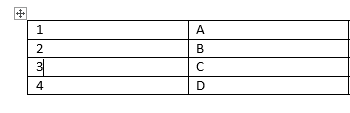
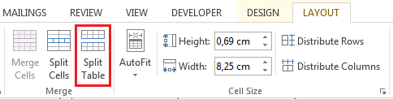

-
Put your cursor on the row that you want as the first row of your second table. In the example table, it’s on the third row.
When you click inside the table, two new Table tools tabs appear on the ribbon: DESIGN and LAYOUT. These tools are visible only when you are in the table, for example, when you add content to the cells.
-
On the LAYOUT tab, in the Merge group, click Split Table.
The table splits into two tables.

You can split the table further, as long as there are multiple rows.